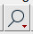
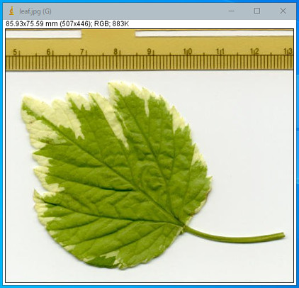
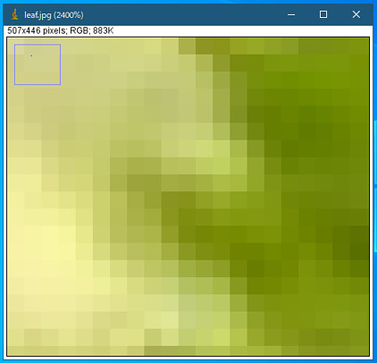
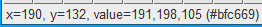
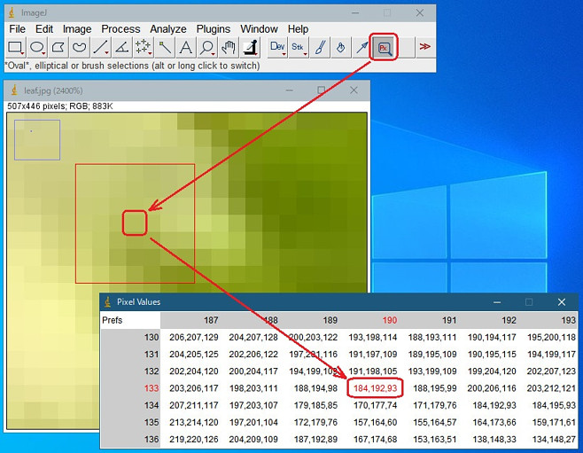
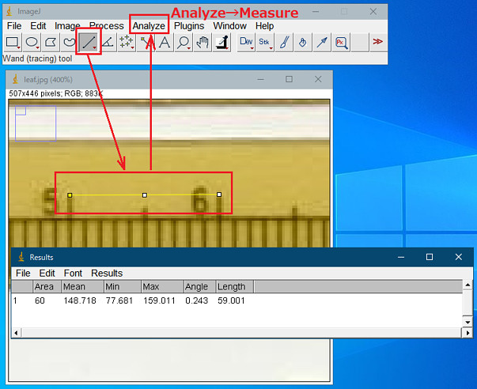

17th October 2021 at 3:50pm
読み込んだ画像について
をクリックし、読み込んだ画像をどんどんズームアップしていきましょう。


小さな正方形が並んでいます。この正方形をピクセル（画素）と言います。画像はこのピクセルで形成されています。
所望のピクセルにマウスを移動すると、ステータスバーに1ピクセルの情報が表示されます。

近辺の情報も表示したい場合は、をクリックし、「Pixel Inspector」をクリックしてください。
ツールバーにが現れたと思います。クリックし、画像の所望のピクセルをクリックしてください。

ピクセルの持つ情報は赤成分(略してR)=184、緑成分(略してG)=192、青成分(略してB)=93のようです。さらに近辺の情報も表示してくれます。
画像のタイプ
ImageJで扱う画像のタイプのいくつかを説明します。
- RGB Color
- 赤（R）・緑（G）・青（B）・透明度（アルファ値）をそれぞれを8ビット（256階調）で表し、1ピクセルを32ビットで表現された画像タイプです。（少々難しいですが、こちらも参考にしてください）
- 8-bit（グレイスケール）
- 白黒の濃淡を表現した画像です。 1ピクセルを8ビット（256階調）で表し、色情報は含まず輝度情報のみを含んでいます。
- 16-bit（グレイスケール）
- 白黒の濃淡を表現した画像です。 1ピクセルを16ビット（65536階調）で表し、色情報は含まず輝度情報のみを含んでいます。
- 32-bit（グレイスケール）
- 濃淡を表現した画像ですが、正の整数だけでなく、負数も含めた小数点を扱うことができます。
分解能について
上の葉っぱの画像には画像処理をする上で重要なものが映っています。
画像の上部に「スケール」が映っています。これは画像の分解能（1ピクセルが何mmなのか）を知る上で大切な情報です。
分解能の計測方法の例を以下に述べます。
- スケール部分の拡大
- 「Straight Line」選択のクリック
- 10mmの間隔を選択
- 「Analyze」 → 「Measure」

「10mm = 59.001ピクセル」なので「0.169mm/ピクセル」の分解能で撮像できているようです。私は撮像条件が決まったら、とりあえず「スケール」を撮像しておきます。
TIPS
上の葉っぱの画像は、File→Open Samples→Leafでダウンロードした画像です。こちらからダウンロードすることも可能です。